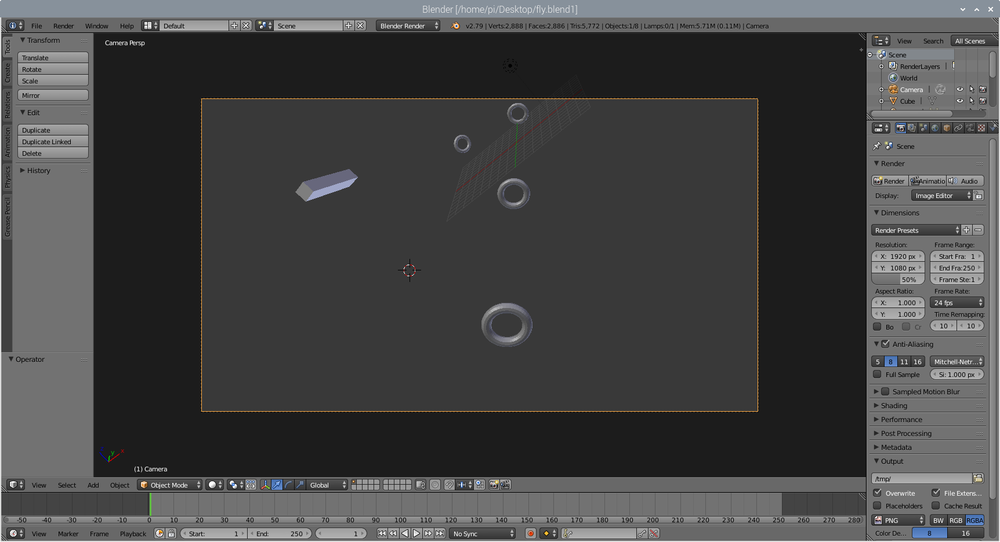

Final Thoughts¶
Project Challenges¶
Getting the proper Blender environment set up on the Raspberry Pi was involved. Blender uses its own version of Python, which doesn’t have critical libraries like RPi.GPIO and smbus. These must be copied to the Blender directory manually. Generally, there was a lot to learn about how Blender handles addons, but the documentation is, fortunately, thorough. I also made the mistake of studying a later version of Blender on another machine, though much of that was still useful.
The single most difficult part of the project was getting matrix rotations to function properly, especially when rotating on the absolute axis. This is an important feature, because the relative axis mode is really only useful when controlling the camera - when rotating an object separate from the user’s view, only absolute rotations are intuitive. I haven’t yet taken Linear Algebra and was not familiar with matrices. Physics also has not covered Quaternions. Eventually, after combing StackOverflow and the Blender forums, I was able to find the solution, which is described in the Rotations section of the Blender page.
My first sensor was stolen in the mai
There were also some difficulties having enough time and space to use equipment. While there were assets available at the school, I did not get a soldering kit myself until very recently.
Future Versions¶
If I were to extend this project in a future version, there are several things I would like to change and add.
Move SensorMenu to its own .py file rather than have it in __init__.py. (Messy)
See if sensor hardware settings can be tweaked for better performance.
Have Options in the Blender UI for changing low-level sensor options, like sample rate and sample division.
Explore other ways to implement the addon in Blender.
Use the accelerometer to enable movement by pressing trigger and moving joystick. This was something I wanted to implement, but it wasn’t performing correctly. Accelerometer sampling may need to be tweaked, or its something else.
Additional sensors in 3D printed housings for a full motion capture suit.
Add bluetooth capability and battery to joystick.
Conclusion¶
This was a fun class that taught me a lot in an area I was really weak in, understanding how low-level electronics function. I’m proud of this final project, even though I shot a bit higher than where I landed. I will work with i2c again on a side project in the future, and am glad I learned about it.
